Ordens de Serviço é o Core Domain. Cadastro, Catálogo e Estoque são contextos de suporte; Identidade e Acesso é genérico. No MVP todos vivem no mesmo monólito.

A rejeição permite revisão pelo diagnóstico; a aprovação baixa estoque e inicia a execução. As demais transições seguem uma única sequência válida.

Itens guardam snapshots de descrição e preço. Movimentos de estoque ligam a peça à OS que causou a saída.